Qt Edu for Developers
Qt Edu for Developers gives you access to developing with Qt’s full C++ and QML frameworks, as well as its Python bindings. Developing on embedded systems is possible with Raspberry Pi as the target platform. This package also includes Qt Design Studio for designing user interfaces.
These instructions walk you through the installation of the Qt Edu for Developers package.
1. Apply for Qt Educational license
Start by filling out the form available here.
Note: To be eligible for a license, use an email address from an educational institution.
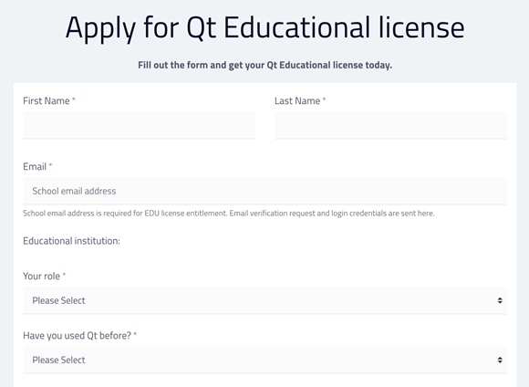
Create a password
After submitting the form, create a password for your Qt Account. Qt Account is where you'll find details about your license, and it's created automatically for you after setting a password.
Note: If you already have an account associated with an educational email address and you are renewing the license, this step is skipped.
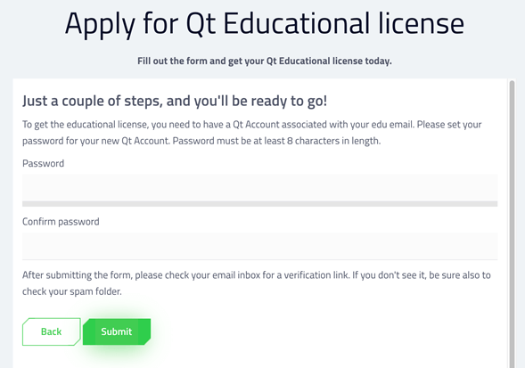
You can find more information about Qt Account here.
2. Verify email address
After setting up the Qt Account, verify your email address. Check your inbox for a message containing a verification link.
3. Download the online installer
The verification link will automatically redirect you to a page for downloading the installer. You can also find it here.
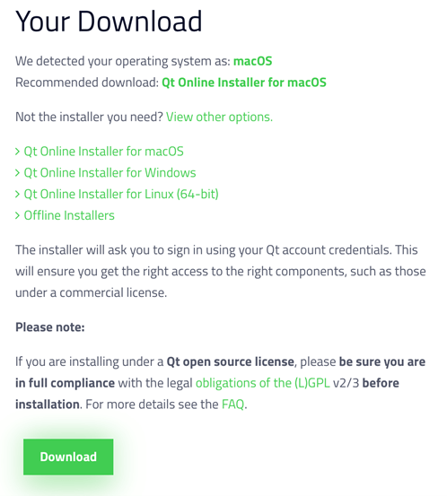
The page detects your operating system automatically and recommends a version to download. Alternatively, you can click on View other options and select the correct version of the online installer, then select Download.
4. Run the installer
Once the download completes, go to your download folder and run the installer.
On Linux, you'll need to set execution permission for the installer binary.
On macOS, the online installer is a .dmg file that contains the installer application. Double-click on the installer icon to run it.
5. Log in to Qt Account
The installer asks you to log in to your Qt Account. Fill in the email address and the password you created in step 1.
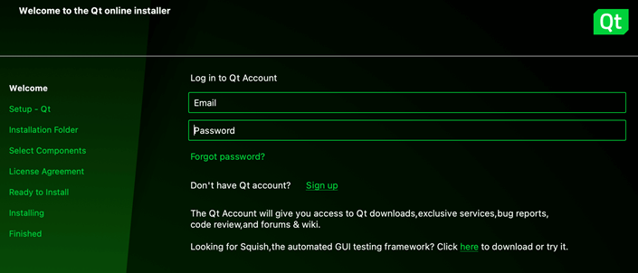
Select Next.
Notes about build environment
On macOS, you may see the following pop-up:
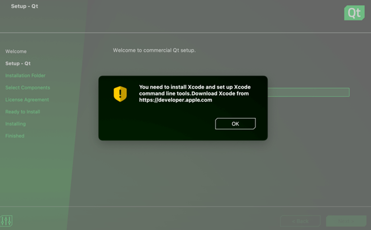
Developing on macOS requires Xcode to be installed on the system. For more information, see Qt for macOS - Build environment.
See also Qt for Windows and Qt for Linux/X11.
6. Contribute to Qt development
On the next step, the installer asks you to contribute to Qt development by tracking usage data.
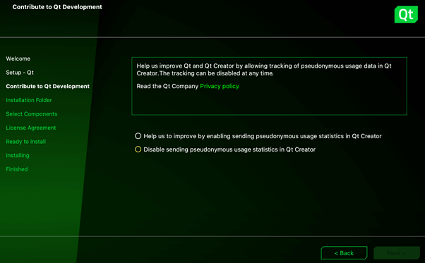
Select the preferred option and then Next.
7. Select installation folder
Select the directory where you want to install Qt.
Note: Avoid whitespace in the installation path as this may lead to problems later.
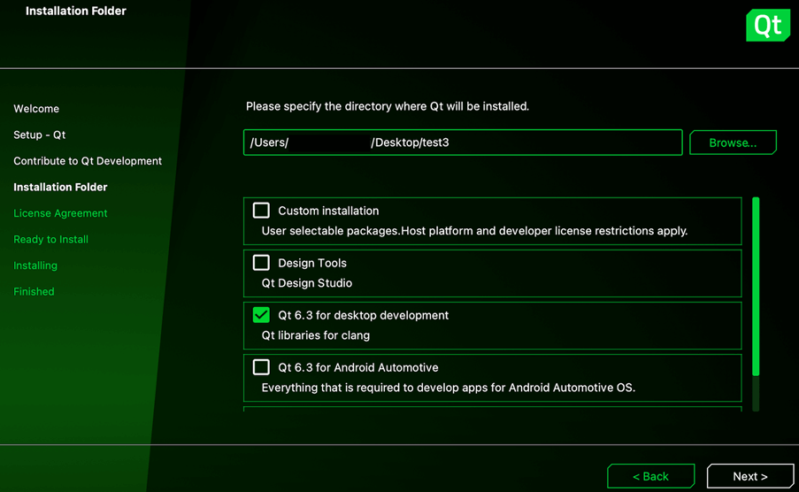
If you are new to Qt, we recommend selecting the latest available version of Qt for desktop development. This installs everything you need for developing desktop applications with Qt. The installation may always be modified later with the maintenance tool, located in Qt's installation folder.
Select Next.
8. License agreements
Before continuing, you need to accept the license agreements. Note that educational licenses are for learning purposes only, as detailed under Appendix 5 of the Qt license agreement.
If you want to create a commercial product, you need to buy a commercial license or use an open-source license provided you can comply with the terms and conditions of the open-source license(s).
For more information, see Qt Licensing.
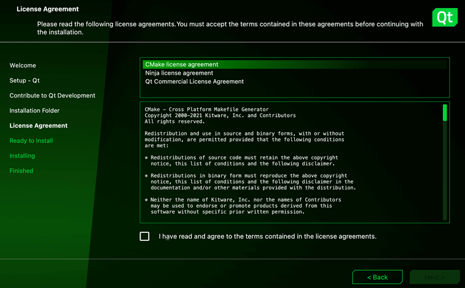
After reviewing the agreements, select the checkbox and continue with Next.
9. Finish the installation
Select Install to start the installation process.
Once installation is complete, you'll see the following screen:
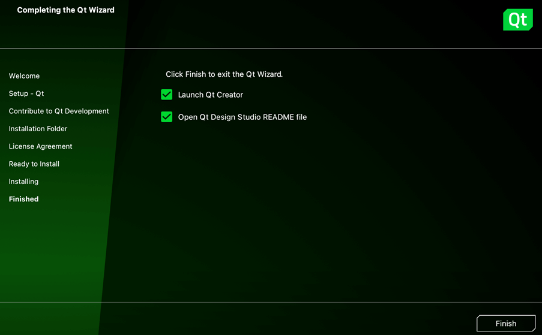
Select Finish to exit the installer.
10. Open Qt Creator
By default, Qt Creator opens automatically after closing the installer.
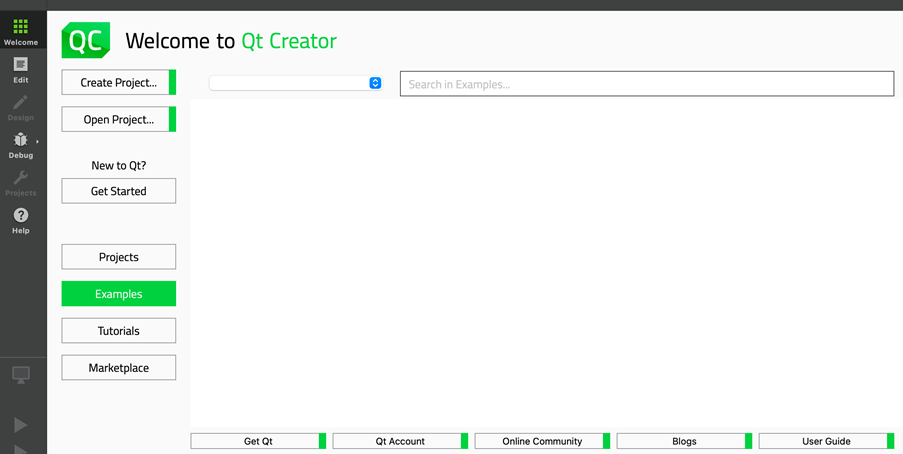
You can also find it in Qt's installation folder:
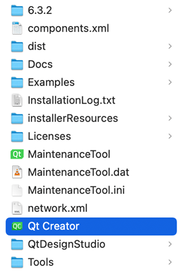
Now you're ready to start developing applications with Qt!
Start learning at resources.qt.io/learning-hub.